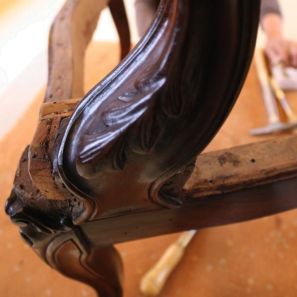
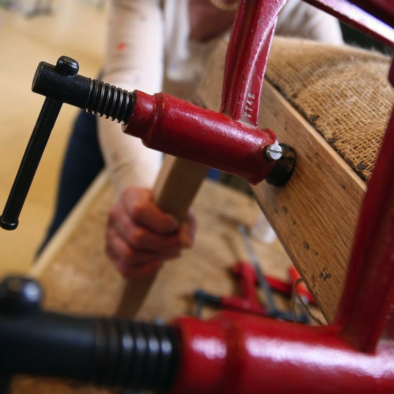
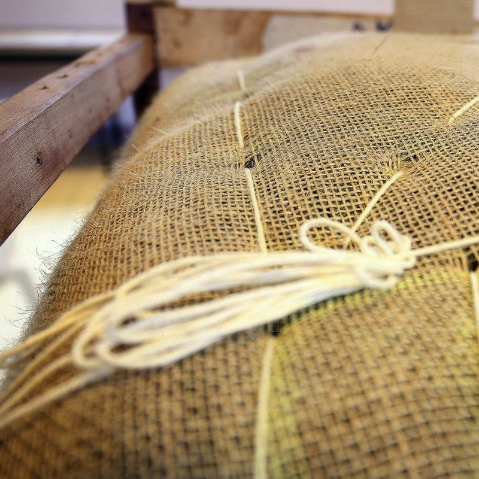
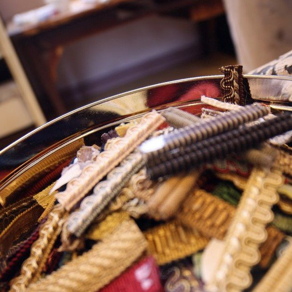
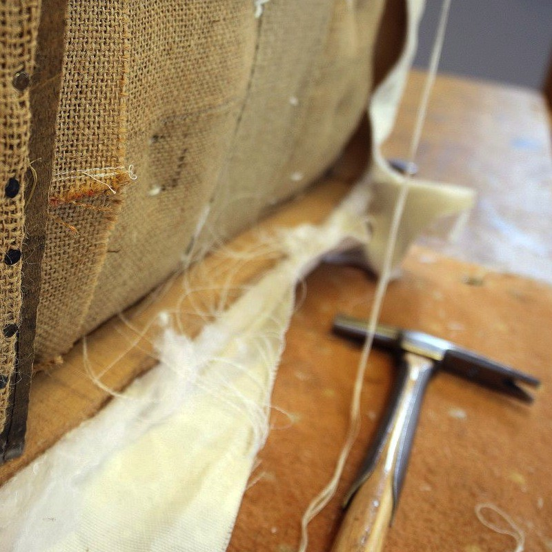
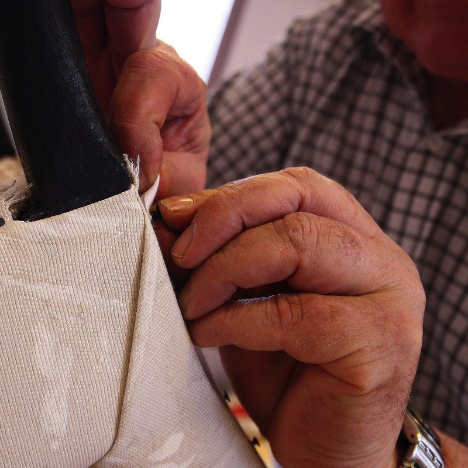

Réfection de sièges et fauteuils anciens
Présentation
Depuis plus de 30 ans, cette association régie par la loi 1901, propose des activités de loisirs en fonction des demandes. Elle a donc évolué dans ses propositions et ses actions; actuellement elle organise des ateliers de loisirs créatifs qui favorisent du lien social entre ses membres.
ASN vous accueille à la Maison Saint Nicaise – 18 rue Poussin – 76000 - ROUEN.
Différents ateliers créatifs se déroulent avec les précieux conseils d’un animateur ou d’un professeur diplômé.
- 
- 
- 
- 
- 
- 
Voir le diaporama des ateliers de réfection de fauteuil à Rouen.
Type de fauteuils et chaises
- Crapaud
- Cabriolet
- Club
- Anglais
- Bergère
- Causeuse
- Boudeuse
- Voltaire
- Montgolfière
- Méridienne
- Windsor
- À la Reine
- Récamier
- À médaillon
- William
- Bridge
- Chauffeuse
- Chesterfield
- Confident
Modalités
Quand ?
Les ateliers fonctionnent de septembre à fin juin
| Matin | Après-midi | Soir | |
|---|---|---|---|
| Mardi | 9h - 12h | 14h - 17h | - |
| Mercredi | - | 14h - 17h | 17h - 20h |
| Jeudi | 9h-12h | 14h - 17h | - |
Comment ?
- Choix entre 6 cours de 3 heures par semaine (voir tableau ci-joint)
- Dans la salle du 1er étage à la Maison Saint Nicaise – 18 rue Poussin à Rouen
- Avec les conseils d’un professeur diplômé (expérience professionnelle de plus de 10 ans avec l’association)
Inscriptions
- Pour l’année de septembre à juin
- Adhésion à l’association : 20 € par an
- Réinscription en juin pour l’année suivante.
- Coût : 330 € pour 32 cours (année 2014 -2015)
Règlement en 3 fois.(octobre – janvier et avril)
REPRISE des cours : le MARDI 16 SEPTEMBRE 2014
Possibilités de stages pendant les vacances scolaires.